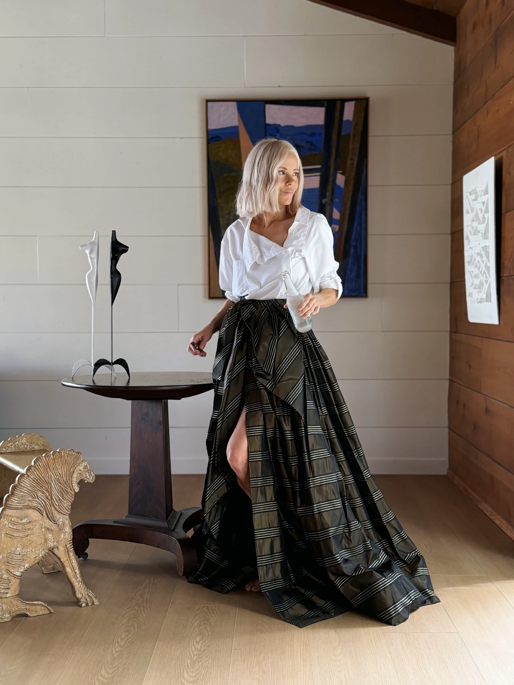
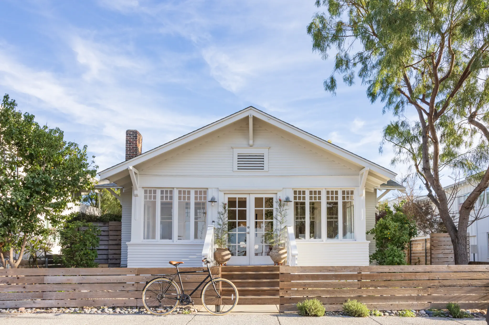

A realtor who's a magazine editor. Correction: a magazine editor who's a realtor.
Where others chase curb appeal, I cultivate cultural allure. Because every house has a backstory dying to be told. Finding it is my beat – even if it’s buried under the house. Blame thirty years as an editor.
What's the editorial treatment?
Our hand crafted process unearths a feeling. That’s what we’re after in a home right?
We commission an editorial presentation that reclaims the character of a home while commanding premium offers.
You're interviewed by an award winning journalist
For decades, Gillian produced storylines for top design publications and luxury brands. Now she brings that same approach to uncovering the narrative of your home. During the process, she finds compelling backstories to capture the most sophisticated buyers.
She shapes the creative narrative of your home
To work with Gillian is to gain access to her creative universe. Evolving the art direction and translating the story into a marketable plan that will maximize visibility and value in an age when everything looks the same.
A visual directive for positioning at the highest market level
Think of this as your home’s brand launch. Home is where the details matter most, so we tap into editorial styling and next-level photography to hit the market with a notable edge.
Because every house has a backstory dying to be told. Finding it is my beat — even if it’s buried under the house.
A headturning approach
The Editorial Treatment gives the market a reason to pay attention.
Maybe your home wasn’t photographed by Julius Shulman. Or designed by a starchitect. That doesn’t mean it doesn’t have a story worth telling. That’s where my job begins.

Where others see listings, she sees legacy.